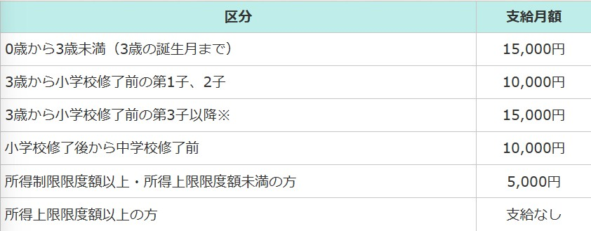

🐉 龍ヶ崎市の子育て支援とは？
龍ヶ崎市では、安心して子育てができるように 手当・相談・保育サービス・イベント・医療支援など さまざまなサポートを行っています。
ここでは主な支援内容を、わかりやすくまとめています。
🍼 主な子育て支援制度
① 子育て応援手当
龍ヶ崎市では、子育てを応援するための手当が支給されています。
受給者
1.支給対象の児童の父または母のうち、所得の高い方
2.支給対象の児童の未成年後見人
3.支給対象の児童の父母が国外在住の場合に、父母に代わって児童を養育する者として指定を受けた方（父母指定者）
4.支給対象の児童を養育している里親
5.1から4以外で、支給対象の児童を養育している方
※支給対象の児童が児童福祉施設等に入所している場合は、当該施設の設置者等が受給者となります。
対象児童
0歳から18歳まで（18歳の誕生日後、最初の3月31日をむかえるまで）の児童
支給額
支給時期
児童手当は原則2、4、6、8、10、12月にそれぞれの前月分までの手当てを支給しています。
振込日は10日です。ただし、10日が土、日、祝日と重なる場合、直前の平日が振込日となります。
ただし対象者や金額は年度により変わるため、公式サイトで最新情報を確認する必要があります。
また、児童手当の手続きについての書類は公式ページにございますのでご確認ください
②📞 子育て相談窓口
龍ヶ崎市では、子育てに関する悩み・不安を相談できる窓口が複数用意されています。
■ こども家庭センター（旧：子育て世代包括支援センター）
- 内容：妊娠・出産・育児に関する総合相談、虐待・家庭の不安など幅広く対応
- 場所：龍ヶ崎市保健センター内
- 受付時間：平日 8:30〜17:15
- 電話：0297-64-1111（代表）
■ 子育て世代包括支援窓口「すくすくサポート」
- 内容：妊娠期から就学前までを専門スタッフが支援
- 支援例：育児相談、発育チェック、保育園・幼稚園の相談
- 電話：0297-64-1111
■ 龍ヶ崎市教育相談センター
- 内容：学校生活・発達・友人関係などの相談
- 対象：小学生〜高校生の保護者や本人
- 電話：0297-62-0566
- 受付時間：平日 9:00〜17:00
■ 茨城県こども家庭110番
- 内容：家庭の悩み、しつけ、育児ストレスなど幅広く相談可
- 電話：029-221-1110（24時間）
■ 子育て支援アプリ「りゅうこちゃんナビ」
- 内容：予防接種、育児イベント、相談先情報をスマホで確認
- 利用料：無料
👶 主な子育て支援サービス
- 産後ケア（訪問型・施設型）
- 子育て短期支援（ショートステイ・トワイライト）
- 児童手当・医療費助成
- 保育園・こども園案内
🏠 龍ヶ崎市の子育てひろば
- 駅前子育て支援センター
- 長戸子育て支援センター
- 八原子育て支援センター
- 馴柴子育て支援センター
③ 保育サービス
仕事や家庭の事情に応じて、保育園・幼稚園・一時預かりなどを利用できます。
- 認可保育園
- 幼稚園
- 一時預かり保育
④ 医療費のサポート（子ども医療費助成）
通院・入院の医療費の一部を助成する制度があります。
子どもが安心して医療を受けられる仕組みです。
🏢 子育てに便利な施設
- りゅうほー子育て支援センター
- 児童センター（遊び場やイベント）
- 図書館（読み聞かせイベント）
🔗 公式サイト
最新の情報は龍ヶ崎市公式サイトで確認できます：